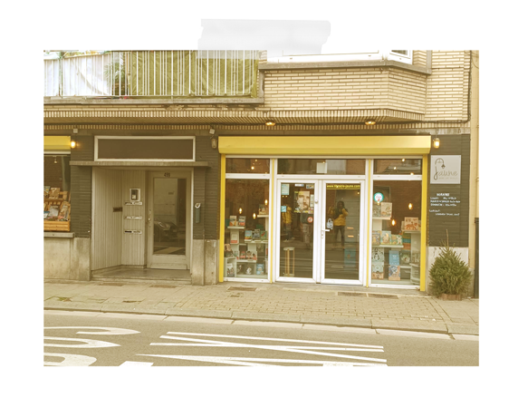
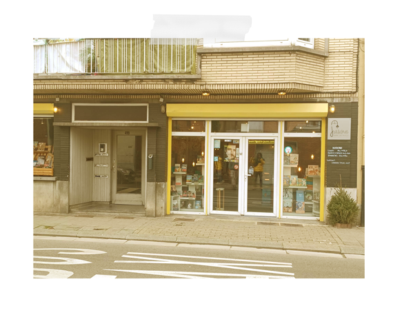

Dorian Potter
Et le travail de fin d'année

Par Leptitnouveau
Prologue Le projet
La mission
Solutionner un problème présent au sein d’une communauté à l’aide d’une application. Tel est la mission dont le jeune Dorian fût chargée par ses professeurs en cette fin d’année. Grand fan de manga, il pensa en premier lieu se tourner vers la communauté de lecteurs de mangas. Mais arrivé à la fin de sa lecture des Harry Potter lui donna envie de viser un groupe plus large, plus sombre, plus mystérieux : Les lecteurs d’œuvres littéraires francophones. Mais saurait-il comprendre les pensées de ce groupe et ainsi trouver les problèmes qu’ils rencontrent...
Chapitre 1*Le problème de communication
Elaboration du guide d’entretien
Avant toute chose, un guide d’entretien était nécessaire. Celui-ci aurait pour but de l’aider à développer une discussion avec les utilisateurs afin d’en extraire les problématiques tant convoitées. Dorian trouva cette épreuve assez facile, il se contenta d’imaginer lui même des problématiques présentes. Et d’orienter son questionnaire de sorte à voir si celles-ci sont avérées. La question maintenant était de savoir si ce guide était bon ? Sans plus tarder, il s’empressa d’aller à la rencontre des utilisateurs !
Que pensez-vous de la communication faite autour des œuvres francophones ?
Quels sont vos hobbies ?
Est-ce que vous vous intéressez aux autres médias ???
Rencontre avec les utilisateurs
Dorian eu du mal à cacher sa joie lors de cette phase. En effet, de nature bavarde et curieuse, il avait hâte de pouvoir dialoguer avec les lecteurs. Comme il n’avait aucune association à portée de main, il se rendit dans les librairies “Paradise BD”, “Mot Passant” et “La librairie Jaune” situées à Bruxelles afin d’en retirer les renseignements qu’il lui semblaient les plus importantes. Il y découvrit plusieurs informations intéressantes tel que, les mangas sont les livres les plus vendus auprès des jeunes ou encore que les clients ont tendance à se fermer vers un seul type de lecture...
 

Mais il voulait aller encore plus loin. Donc plutôt que de se limiter à l’interview des libraires, il se mit à interroger encore plus de personnes pour être sûr de son coup. À sa grande joie, son guide d’entretien lui a permis de faire ressortir trois problématiques à l’issue de ces vingts interviews:
- La concentration de lecteurs dans un seul genre de lecture ;
- La communication effectuée autour des œuvres francophones (Notamment les jeunes auteurs) ;
- La difficulté que rencontre les œuvres francophones à fonctionner à l’étranger.
Il ne restait plus qu’à choisir sur laquelle il souhaitait se lancer. Souhaitant lui-même devenir auteur plus tard, le problème de communication le touchait énormément. Il décida donc de se pencher dessus, bien qu’il se demanda si il pourrait trouver une solution à une problématique aussi grande...
Chapitre 2** Le site pour les livres francophones
Des solutions !
Pour Dorian, internet est LA solution contre les problèmes de communication. Mais une question lui taraudait l’esprit. Comment se fait-il que ce problème soit encore présent au 21e siècle dans ce cas ? Les libraires lui ont dit que les maisons d’édition ont tendance à réaliser plus de communication autour de leurs auteurs à succès délaissant les autres. En plus de cela, Dorian pensa que le nombre de maison d’édition différentes pouvait aussi poser des difficultés pour suivre les différentes parutions.
“Un site internet regroupant l’ensemble des sorties francophones”,
c’est la première hypothèse qui lui vint à l’esprit...
Après quelques recherches, le jeune étudiant trouva le site Babelio et Booknode qui sont dans l’idée qu’il se fait de son site. Mais alors est-ce que le site auquel il pensait vaut-il vraiment le coup d’être réalisé ? Aurait-il quelque chose de plus à proposer ?
Chapitre 3***Développement de la solution
La veille
La première chose à faire était de regarder les fonctionnalités que proposent ses conccurents (Du moins c’est ce qu’il pense...). Booknode possède un calendrier regroupant les sorties à venir du mois. En plus de ça, les filtres “Manga”, “Poche”, “Grand format” et “Bande dessinée” peuvent être appliqués. “Un outil simple et pratique à utiliser pour prendre connaissance des prochaines sorties” pensa t-il...
Durant ses recherches, il tomba aussi sur le site “Babelio” qui fait une grande mise en avant de certains livres. Cependant Dorian était incapable de trouver les critères selon lesquelles une œuvre est mise en avant. Cela ne l’a pas empêché de trouver cette idée fascinante.
Goodreads (Un autre site) possède une option à laquelle Dorian avait déjà pensée. Un outil qui recommende des lectures aux utilisateurs en fonction de leurs goûts. Voir un autre site appliquer cette idée renforça encore plus sa volonté à l’intégrer dans le sien !

Pousser les concepts
Pour le jeune garçon aux cheveux locksés, une chose était sûr : Il ne pouvait pas se baser bêtement sur ce qu’ont réalisés ses adversaires. Il devait aller encore plus loin ! Dorian souhaitait tellement pouvoir aider les jeunes auteurs. Il décida que le calendrier que possèdera son site fera une mise en avant des jours où un livre réalisé par ceux-ci est publié (A l’aide de couleurs par exemple).
Il décida que son quiz se baserait sur les critères suivants :
- Les œuvres préférées ;
- Le genre d’œuvre voulu ;
- Les lectures du moment.
Afin de proposer de nouvelles lectures aux utilisateurs. Ce quiz résulterait sur deux classements de compatibilité à dix emplacements. Mettant d’un côté des œuvres reccommandées ayant été réalisées par de jeunes auteurs. Et de l’autre, toutes les œuvres francophones reccommandées.
Aimant beaucoup les surprises, l’idée d’un bouton découverte lui venu en tête. Il permettrait de faire découvrir des œuvres aux hasard parmi les sorties récentes de bouquin de jeunes auteurs. Selon lui, cela pourrait intéresser les plus aventureux.
Malgré tout, Dorian se demanda si ses idées allaient vraiment intéresser les utilisateurs. Il réalisa donc un sondage pour savoir si les utilisateurs trouvaient ces idées pertinantes ou non. À sa grande joie, le résultat fût positif. En plus de cela, l’idée “Reccomendation d’influenceurs” lui parcouru l’esprit. De cette façon, les auteurs auraient accès directement sur cette même page aux critiques de ces personnes et pourraient découvrir d’autres œuvres par la même occasion.
Appuyez sur le bouton pour trouver un livre
Chapitre 4****La présentation
Prototype
Après avoir pensé à toutes ces idées, il fallait commencer la préparation de la présentation. Un prototype de l’application semblait être une bonne idée. Il s’y est donc rapidement attelé à sa réalisation.
Préparation aux questions
Dorian devait aussi se tenir prêt dans le cas où les professeurs auraient des questions. Il en a donc préparé quelques une :
-
Pourquoi se limiter aux œuvres françaises ?
Depuis tout petit je souhaite devenir auteur de manga. On a la chance d’avoir un marché qui se crée petit à petit autour des mangas français. Je souhaite donc y contribuer. De plus, lorsque les consignes du TFA ont été données, j’arrivais vers la fin de ma lecture des Harry Potter. Je me suis donc dit “Tiens pourquoi ne pas élargir mon champ d’action, et m’intéresser à l’ensemble des œuvres francophones plutôt que juste les mangas français ?”
-
En quoi est-ce que le bouton aléatoire est pertinant ?
Lors de mes interviews, certains utilisateurs me disaient qu’ils n’avaient pas vraiment de genre préféré (Ou soit se forçaient à en trouver afin de répondre à ma question). Ce bouton aurait pour but d’aider les utilisateurs qui sont dans ce cas là à trouver une nouvelle œuvre sans passer par le quiz.
-
Qu’est-ce que ton site apporte plus que les autres ?
Mon site se concentre sur les œuvres francophones, bien que sur les autres sites certains filtres existent. Pour une raison que j’ignore, il n’y a aucun filtre qui dévoile QUE les œuvres francophones. De plus, ce site aura aussi pour but de mettre en avant les jeunes auteurs. Là où les sites concurrents sont plus dans l’idée d’un réseau social autour de l’univers des livres et mettent en avant certaines œuvres sans critères spécifiques (Du moins je n’en ai pas trouvé).
Une fois le questionnaire fictif terminé. Il s’est mis à penser à ce dont-il aurait besoin pour la conception de son projet.

Chapitre 5*****Une nouvelle aventure
Vers la réalisation du projet
Épuisée, Dorian était tout de même heureux. Toutes ces longues conversations qu’il a eu avec les utilisateurs, tous ces longs moments de réflexion, toutes ces analyses... Il le sait, il en est ressorti plus fort ! Mais tant de questions restent en suspens. Quelle apparence aura son site ? Sera t-il en mesure de le réaliser ? Est-ce que ses hypothèses sont pertinantes ?
Malgré tout il n’ a qu’une seule hâte,
voir à quoi ressemblera son projet final...